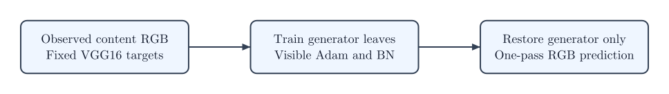
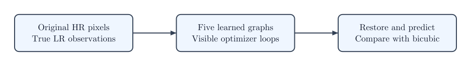
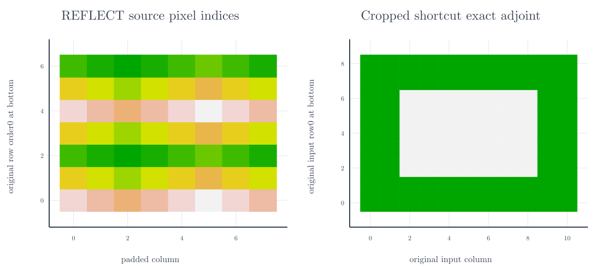
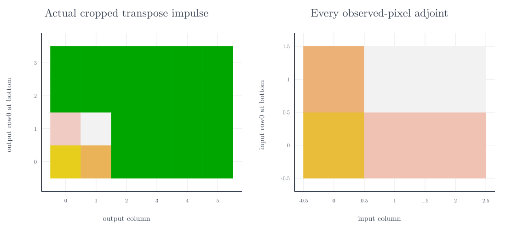
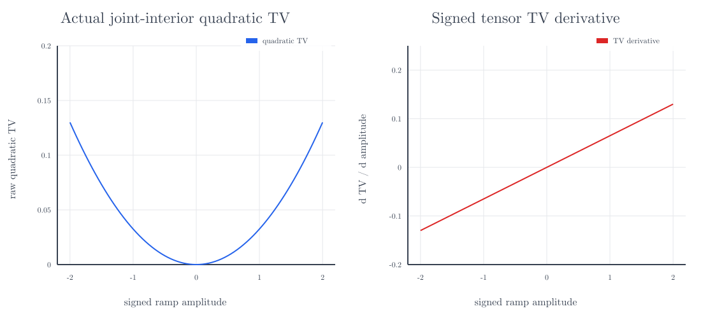
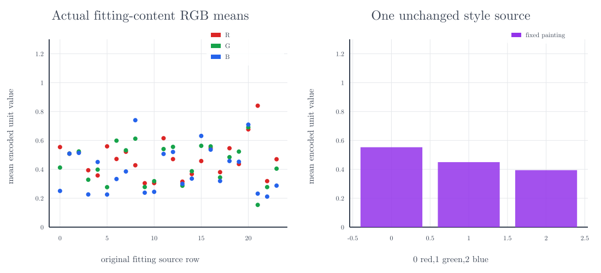
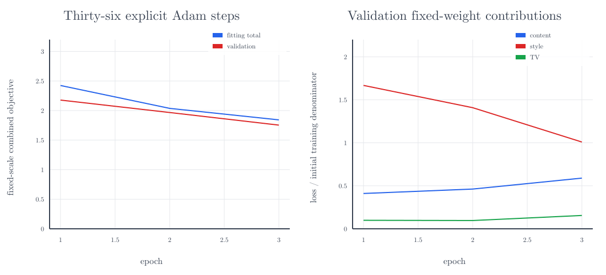
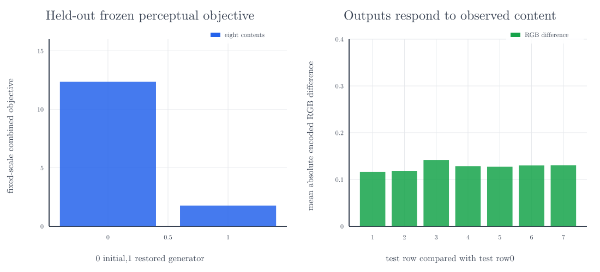
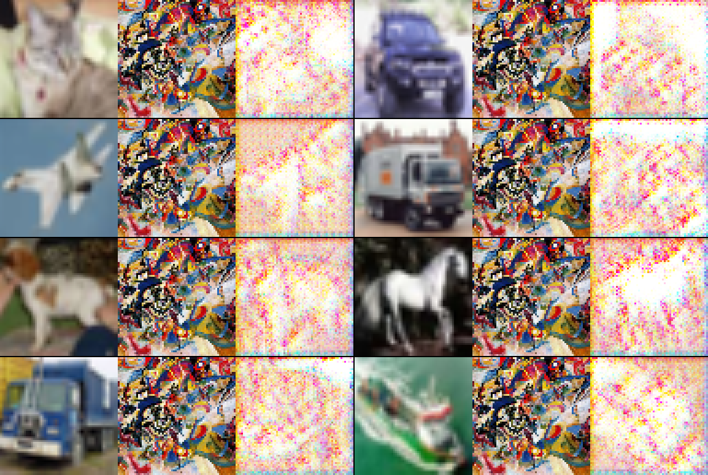

Johnson fast style:explicit tensor training and generator-only prediction
Abstract
Train a complete compact Johnson transformation network using genuine frozen ImageNet VGG16 content/style features and quadratic TV. Explain exact reflection,cropped residuals and learned stride phase,show all36 Adam updates with paired BN checkpoint selection,and restore a separate generator-only predictor. Original CIFAR contents,Kandinsky painting,independent Keras gradients and all held-out outputs keep the short fit reproducible.
Source example: examples/cpp/source/nn/1_convolutional_neural_networks/1.8_other_vision_tasks/johnson_fast_style.cpp.
The method
The transformation network learns weights;the VGG16 feature extractor stays fixed. Every learnable tensor and moving BN statistic is explicit,and the report owns the optimizer,all minibatches,validation and paired checkpoint. Deployment consumes only observed RGB. Content/style targets and training objectives are confined to the demonstrated fit and evaluation.
The concept diagram below is drawn by dm::graphics::Diagram. Its editable C++
source is the complete block below; regeneration uses the same datamunge toolchain
as the numerical examples. Exports consume the saved local SVG.
#include <dm/dm.hpp>
int main() {
std::filesystem::create_directories("build");
dm::graphics::Diagram diagram;
diagram.node("n0", {0.0, 0}, "Observed content RGB\nFixed VGG16 targets");
diagram.node("n1", {5.2, 0}, "Train generator leaves\nVisible Adam and BN");
diagram.node("n2", {10.4, 0}, "Restore generator only\nOne-pass RGB prediction");
diagram.edge("n0", "n1").edge("n1", "n2");
diagram.save_svg("build/johnson_fast_style_concept.svg");
}
Executed tensor architecture
This figure executes the inference configuration shown in the code, using a zero-valued shape probe without fitting or loading a checkpoint. Named stage boundaries group whole subgraphs where available; other nodes retain functional-layer detail. Exact batch-inclusive shapes and reachable parameter totals come from the trace. Shared linear scales map spatial dimensions and channel counts to blocks; the one-pixel visibility floor is disclosed in the legend. Labels use compact monospace text, rotate counterclockwise and sit beside their own glyphs. Arrows flow left to right; wide diagrams scroll at native size on the website.
#include <dm/dm.hpp>
int main() {
namespace n = dm::nn;
namespace m = n::models;
n::set_num_threads(2);
std::filesystem::create_directories("build");
n::ParameterStore p(17), state(18);
n::Module architecture_model(
[&](const n::Tensor& image) { return m::JohnsonTransform(p, state, image, 8, false).image; },
"Johnson fast style:explicit tensor training and generator-only prediction");
n::ModelPlotOptions options;
options.style = n::ModelPlotStyle::Flow;
options.detail = n::ModelPlotDetail::Blocks;
options.labels = {.type = n::ModelPlotLabel::NameAndShape, .size = 12, .wrap = 24};
options.spacing = {.layer = 24, .lane = 12, .label = 8, .margin = 20};
options.sizing.spatial_size = 96;
options.sizing.channel_size = 42;
options.sizing.minimum_extent = 1;
options.opacity = .8;
const auto diagram = architecture_model.plot(n::zeros({1, 64, 64, 3}), options);
diagram.save_svg("build/johnson_fast_style_architecture.svg");
std::print(
"{} displayed nodes; {} reachable learned values.\n",
diagram.nodes().size(),
diagram.parameter_count());
}112 displayed nodes; 108771 reachable learned values.

Reflection and cropped residuals preserve exact coordinates
Reflect padding excludes the boundary sample. The transformation pads40 pixels around the observed content,then applies two stride2 encoders and five residual blocks. Each block has two VALID3x3 convolutions,so its shortcut drops two pixels on every side. Residual additions have no ReLU: negative shortcut values survive. BN follows the two convolutions,with ReLU only after the first. The fixture displays actual padded indices and the exact crop-only input adjoint when the residual convolutions are zero.
#include <dm/dm.hpp>
int main() {
namespace n = dm::nn;
namespace m = n::models;
n::set_num_threads(2);
const auto source = n::arange(0, 12).reshape({1, 3, 4, 1}),
reflected = m::JohnsonReflect(source, 2);
const auto x = (n::arange(0, 9 * 11 * 2).reshape({1, 9, 11, 2}) * .01 - 1.).requires_grad_();
n::ParameterStore p(17), state(18);
{
n::NoGradGuard guard;
m::JohnsonResidual(p, state, "r", x, true, false);
for (const auto &name : p.names())
if (name.find("/conv") != std::string::npos)
p.set(name, n::zeros(p.at(name).shape()));
}
const auto out = m::JohnsonResidual(p, state, "r", x, true, false),
gradient = n::grad(n::sum(out), {x})[0];
std::print("9x11 residual ->5x7;minimum signed output {:.6f};crop adjoint has{} nonzeros.\n",
n::min(out).item(), n::count_nonzero(gradient).item<std::int64_t>());
auto a = n::plot_tensor_map(n::reverse(reflected.reshape({7, 8}), {0}), 0, 11),
b = n::plot_tensor_map(n::reverse(n::select(n::select(gradient, 0, 0), 2, 0), {0}), 0,
1);
a.title("REFLECT source pixel indices")
.x_label("padded column")
.y_label("original row order0 at bottom");
b.title("Cropped shortcut exact adjoint")
.x_label("original input column")
.y_label("original input row0 at bottom");
auto layout = dm::graphics::RLayout::create(1, 2);
layout.add(a).add(b).size(1100, 500).fit_panels().save_svg(
"build/johnson_fast_style_reflect.svg");
}9x11 residual ->5x7;minimum signed output -0.520000;crop adjoint has70 nonzeros.

Learned upsampling has an explicit stride phase
Torch k3/s2/p1 down-convolution pads one zero sample on each side,then uses VALID stride2. Its corresponding learned transpose uses a VALID2H+1 by2W+1 output and crops from coordinate1 to2H/2W. This matches adjustment1 and preserves the source phase. A generic SAME stride2 can align odd padding differently. The transpose initializer uses true fan-in9*Cin,not9*Cout.
#include <dm/dm.hpp>
int main() {
namespace n = dm::nn;
namespace m = n::models;
n::ParameterStore p(17);
const auto x = n::tensor({1., 0., 0., 0., 0., 0.}, {1, 2, 3, 1}).requires_grad_();
{
n::NoGradGuard guard;
m::JohnsonUp(p, "up", x, 1);
p.set("up/W", n::arange(1, 10).reshape({3, 3, 1, 1}));
p.set("up/b", n::zeros({1}));
}
const auto y = m::JohnsonUp(p, "up", x, 1), gradient = n::grad(n::sum(y), {x})[0];
std::print("2x3 observed impulse ->4x6 learned transpose;input adjoint:{}\n", gradient);
auto a = n::plot_tensor_map(n::reverse(y.reshape({4, 6}), {0}), 0, 9),
b = n::plot_tensor_map(n::reverse(gradient.reshape({2, 3}), {0}), 0, 45);
a.title("Actual cropped transpose impulse")
.x_label("output column")
.y_label("output row0 at bottom");
b.title("Every observed-pixel adjoint")
.x_label("input column")
.y_label("input row0 at bottom");
auto layout = dm::graphics::RLayout::create(1, 2);
layout.add(a).add(b).size(1100, 500).fit_panels().save_svg(
"build/johnson_fast_style_stride.svg");
}2x3 observed impulse ->4x6 learned transpose;input adjoint:float32[1, 2, 3, 1] [[[[28], [39], [39]], [[33], [45], [45]]]]

Fixed perceptual targets and quadratic total variation
Johnson content is mean squared relu2_2 error. Each style Gram divides by H*W*C,and style sums the batch-mean squared Frobenius distances over relu1_2,2_2,3_3 and4_3. These coefficients differ from Gatys pixel optimization. Quadratic TV is.5*mean(right_difference²+down_difference²) over the common (H-1)x(W-1) interior. The amplitude sweep calls the actual tensor TV helper and differentiates every point. The real fit fixes content/style/TV scaling once from the initial training-mode output.
#include <dm/dm.hpp>
int main() {
namespace n = dm::nn;
namespace m = n::models;
const auto alpha = n::arange(-2., 2.001, .05, n::DType::Float64).requires_grad_(),
base = n::arange(0, 4 * 5 * 3, 1, n::DType::Float64).reshape({1, 4, 5, 3}) / 60.;
std::vector<n::Tensor> values;
for (std::int64_t i = 0; i < alpha.numel(); ++i)
values.push_back(m::JohnsonTV(base * n::select(alpha, 0, i)));
const auto tv = n::stack(values, 0), gradient = n::grad(n::sum(tv), {alpha})[0];
const auto x = n::ones({2, 3, 4, 5});
std::print("Gatys/Johnson Gram entry ratio {:.6f},equal to5 channels;constant TV {:.3g}.\n",
(n::mean(m::StyleGram(x)) / n::mean(m::JohnsonGram(x))).item(),
m::JohnsonTV(x).item());
auto a = dm::graphics::RPlot::create(), b = dm::graphics::RPlot::create();
a.lines(alpha.detach().to_vector<double>(), tv.to_vector<double>(), "quadratic TV",
{37, 99, 235})
.title("Actual joint-interior quadratic TV")
.x_label("signed ramp amplitude")
.y_label("raw quadratic TV")
.y_limits(0, .2);
b.lines(alpha.detach().to_vector<double>(), gradient.to_vector<double>(), "TV derivative",
{220, 38, 38})
.title("Signed tensor TV derivative")
.x_label("signed ramp amplitude")
.y_label("d TV / d amplitude")
.y_limits(-.2, .25);
auto layout = dm::graphics::RLayout::create(1, 2);
layout.add(a).add(b).size(1100, 500).fit_panels().save_svg(
"build/johnson_fast_style_tv.svg");
}Gatys/Johnson Gram entry ratio 5.000000,equal to5 channels;constant TV 0.

Complete transformation and genuine frozen VGG16
Full base32 has1,679,235 learned values in62 tensors and3,200 moving BN values in30 tensors. Compact base8 retains every stage with108,771 learned and800 BN values. Reflection,three encoders,five cropped residuals and two learned upsamplers produce11 retained stages. Native tests execute full 256x256 forward/backward and exact compact64/80 geometry.
VGG16 imports all26 genuine Keras Float32 arrays/14,714,688 values. Frozen features use max pools;the selected last ReLUs differ from Gatys VGG19. Independent Keras fixtures verify all selected activations,all four losses and every batched input gradient. Preparation reuses the pinned official sources and dm::datasets::prepare_example_data("style"),with the separate CPU reference requirements in scripts/cnn_style_reference_requirements.txt. Tensor reports perform their own image preprocessing and optimizer updates.
#include <dm/dm.hpp>
int main() {
namespace n = dm::nn;
namespace m = n::models;
n::set_num_threads(2);
std::filesystem::path cache;
if (const auto *p = std::getenv("DATAMUNGE_DATA_DIR"))
cache = p;
else if (const auto *p = std::getenv("XDG_CACHE_HOME"))
cache = std::filesystem::path(p) / "datamunge/datasets";
else
cache = std::filesystem::path(std::getenv("HOME")) / ".cache/datamunge/datasets";
std::filesystem::path assets = cache / "style_transfer";
if (const auto *p = std::getenv("DATAMUNGE_STYLE_DIR"))
assets = p;
else
dm::datasets::prepare_example_data("style", assets.string());
std::print("| base width | learned scalars | learned leaves | BN values | BN leaves | "
"stages |\n|---:|---:|---:|---:|---:|---:|\n");
for (int base : {32, 8}) {
n::ParameterStore p(17), state(18);
n::NoGradGuard guard;
const auto net = m::JohnsonTransform(p, state, n::full({1, 64, 80, 3}, .4), base);
std::print("| {} | {} | {} | {} | {} | {} |\n", base, p.count(), p.size(), state.count(),
state.size(), net.stages.size());
if (net.image.shape() != n::Shape{1, 64, 80, 3})
return 1;
}
const auto weights = m::LoadTensorMap((assets / "vgg16.npz").string());
m::FrozenVgg16 vgg(weights);
n::NoGradGuard guard;
const auto features = vgg.Extract(m::LoadStyleImage(assets / "style.jpg", 64));
std::print("26 genuine imported VGG16 arrays,14714688 values,zero optimizer leaves.\n| "
"selected style block | H | W | C |\n|---:|---:|---:|---:|\n");
for (int i = 0; i < 4; ++i)
std::print("| {} | {} | {} | {} |\n", i + 1, features.style[i].size(1),
features.style[i].size(2), features.style[i].size(3));
vgg.CheckFrozen();
}| base width | learned scalars | learned leaves | BN values | BN leaves | stages |
|---|---|---|---|---|---|
| 32 | 1679235 | 62 | 3200 | 30 | 11 |
| 8 | 108771 | 62 | 800 | 30 | 11 |
26 genuine imported VGG16 arrays,14714688 values,zero optimizer leaves.
| selected style block | H | W | C |
|---|---|---|---|
| 1 | 64 | 64 | 64 |
| 2 | 32 | 32 | 128 |
| 3 | 16 | 16 | 256 |
| 4 | 8 | 8 | 512 |
Actual content data and the fixed painting
Read original CIFAR-10 training rows0..23 for fitting and24..31 for validation. Original test rows8..15 provide eight held-out contents;test0..7 remain development diagnostics. Normalize raw bytes and legacy-resize32->64 with tensors. Fixed Kandinsky painting pixels come from the original pinned JPEG and tensor center-square preparation. No generated replacement data is used. This tiny24/8/8 split is a teaching fit,not the paper’s COCO experiment. The painting and its source attribution are retained in the shared asset manifest.
#include <dm/dm.hpp>
int main() {
namespace n = dm::nn;
namespace m = n::models;
n::set_num_threads(2);
std::filesystem::path cache;
if (const auto *p = std::getenv("DATAMUNGE_DATA_DIR"))
cache = p;
else if (const auto *p = std::getenv("XDG_CACHE_HOME"))
cache = std::filesystem::path(p) / "datamunge/datasets";
else
cache = std::filesystem::path(std::getenv("HOME")) / ".cache/datamunge/datasets";
dm::datasets::fetch("cifar10", (cache / "cifar10").string());
std::filesystem::path assets = cache / "style_transfer";
if (const auto *p = std::getenv("DATAMUNGE_STYLE_DIR"))
assets = p;
else
dm::datasets::prepare_example_data("style", assets.string());
const auto original_train =
n::data::LoadCifar({cache / "cifar10/data_batch_1.bin"}, n::data::Cifar::k10),
original_test =
n::data::LoadCifar({cache / "cifar10/test_batch.bin"}, n::data::Cifar::k10);
std::vector<std::size_t> fit_rows, val_rows, test_rows;
for (int i = 0; i < 24; ++i)
fit_rows.push_back(i);
for (int i = 24; i < 32; ++i)
val_rows.push_back(i);
for (int i = 8; i < 16; ++i)
test_rows.push_back(i);
const auto fitting = m::FastStyleImages(original_train.images, fit_rows),
validation = m::FastStyleImages(original_train.images, val_rows),
testing = m::FastStyleImages(original_test.images, test_rows),
painting = m::LoadStyleImage(assets / "style.jpg", 64);
std::filesystem::create_directories("figures");
const auto first = n::slice_axis(fitting, 0, 0, 8),
tiles = n::concat({first, n::ones_like(first) * painting}, 2);
n::save_image_grid(tiles, "build/johnson_fast_style_inputs.png", 2, 0, 1, 2, 0, 3);
auto a = dm::graphics::RPlot::create(), b = dm::graphics::RPlot::create();
const std::array<dm::graphics::RGB, 3> colors = {
{{220, 38, 38}, {22, 163, 74}, {37, 99, 235}}};
const auto mean = n::mean(fitting.to(n::DType::Float64), {1, 2});
for (int c = 0; c < 3; ++c)
a.points(n::arange(0, 24).to_vector<double>(), n::select(mean, 1, c).to_vector<double>(),
std::string(1, std::string("RGB")[c]), colors[c]);
a.title("Actual fitting-content RGB means")
.x_label("original fitting source row")
.y_label("mean encoded unit value")
.y_limits(0, 1.3);
const auto painting_means = n::mean(painting.to(n::DType::Float64), {0, 1, 2});
b.bars({0., 1., 2.}, painting_means.to_vector<double>(), "fixed painting", {147, 51, 234})
.title("One unchanged style source")
.x_label("0 red,1 green,2 blue")
.y_label("mean encoded unit value")
.y_limits(0, 1.3);
auto layout = dm::graphics::RLayout::create(1, 2);
layout.add(a).add(b).size(1100, 500).fit_panels().save_svg(
"build/johnson_fast_style_data.svg");
std::print(
"24 fitting/8 validation/8 held-out original contents,64x64;painting mean RGB:{}\n",
painting_means);
}24 fitting/8 validation/8 held-out original contents,64x64;painting mean RGB:float64[3] [0.553036, 0.44998, 0.394347]

Explicit Adam training and paired validation checkpoints
Warm all62 learned and30 BN tensors before Adam(.001). Cache fixed VGG content targets and four painting Grams with no graph. Set content/style/TV denominators once from the initial training-mode output. Show all36 two-image minibatch updates over three epochs. Training uses batch moments and updates moving BN once per step;validation uses moving statistics without mutation. Save learned parameters and BN state together when validation improves.
Restore a separate generator-only model. Its prediction call receives observed RGB only;there is no VGG,painting,target or optimizer in deployment. Prove paired checkpoint parity,repeated output,immutable weights/BN and single/batch agreement. Compare all eight held-out contents with initialization using the same frozen perceptual objectives. Report actual outputs,content sensitivity and measured small-image CPU latency without a real-time claim.
#include <dm/dm.hpp>
int main() {
namespace n = dm::nn;
namespace m = n::models;
n::set_num_threads(2);
std::filesystem::path cache;
if (const auto *p = std::getenv("DATAMUNGE_DATA_DIR"))
cache = p;
else if (const auto *p = std::getenv("XDG_CACHE_HOME"))
cache = std::filesystem::path(p) / "datamunge/datasets";
else
cache = std::filesystem::path(std::getenv("HOME")) / ".cache/datamunge/datasets";
dm::datasets::fetch("cifar10", (cache / "cifar10").string());
std::filesystem::path assets = cache / "style_transfer";
if (const auto *p = std::getenv("DATAMUNGE_STYLE_DIR"))
assets = p;
else
dm::datasets::prepare_example_data("style", assets.string());
const auto original_train =
n::data::LoadCifar({cache / "cifar10/data_batch_1.bin"}, n::data::Cifar::k10),
original_test =
n::data::LoadCifar({cache / "cifar10/test_batch.bin"}, n::data::Cifar::k10);
std::vector<std::size_t> fit_rows, val_rows, test_rows;
for (int i = 0; i < 24; ++i)
fit_rows.push_back(i);
for (int i = 24; i < 32; ++i)
val_rows.push_back(i);
for (int i = 8; i < 16; ++i)
test_rows.push_back(i);
const auto fitting = m::FastStyleImages(original_train.images, fit_rows),
validation = m::FastStyleImages(original_train.images, val_rows),
testing = m::FastStyleImages(original_test.images, test_rows),
painting = m::LoadStyleImage(assets / "style.jpg", 64);
const auto weights = m::LoadTensorMap((assets / "vgg16.npz").string());
m::FrozenVgg16 vgg(weights);
std::array<n::Tensor, 4> style_targets;
{
n::NoGradGuard guard;
const auto f = vgg.Extract(painting);
for (int i = 0; i < 4; ++i)
style_targets[i] = m::JohnsonGram(f.style[i]);
}
auto cache_content = [&](const n::Tensor &images) {
n::NoGradGuard guard;
std::vector<n::Tensor> parts;
for (std::int64_t i = 0; i < images.size(0); i += 2)
parts.push_back(
vgg.Extract(n::slice_axis(images, 0, i, std::min(i + 2, images.size(0)))).content);
return n::concat(parts, 0);
};
const auto fit_targets = cache_content(fitting), val_targets = cache_content(validation),
test_targets = cache_content(testing);
const auto cached_fit = fit_targets.clone(), cached_val = val_targets.clone(),
cached_test = test_targets.clone();
std::array<n::Tensor, 4> gram_snapshots;
for (int i = 0; i < 4; ++i)
gram_snapshots[i] = style_targets[i].clone();
n::ParameterStore p(17), state(18);
{
n::NoGradGuard guard;
m::JohnsonTransform(p, state, n::zeros({1, 64, 64, 3}), 8, false);
}
n::OptimizerConfig config;
config.kind = n::OptimizerKind::Adam;
n::Optimizer adam(p, .001, config);
double content_denominator = 1, style_denominator = 1, tv_denominator = 1;
auto objective = [&](const n::Tensor &x, const n::Tensor &target, bool training,
bool update) {
const auto output = m::JohnsonTransform(p, state, x, 8, training, update).image;
const auto f = vgg.Extract(output);
const auto c = m::JohnsonContent(f.content, target),
s = m::JohnsonStyle(f.style, style_targets), tv = m::JohnsonTV(output);
return std::array<n::Tensor, 4>{
c / content_denominator + s / style_denominator + tv / tv_denominator, c, s, tv};
};
const auto probe = n::slice_axis(fitting, 0, 0, 2),
probe_target = n::slice_axis(fit_targets, 0, 0, 2);
{
n::NoGradGuard guard;
const auto raw = objective(probe, probe_target, true, false);
content_denominator = double(float(raw[1].item()));
style_denominator = double(float(raw[2].item()));
tv_denominator = double(float(raw[3].item()));
}
if (content_denominator <= 0 || style_denominator <= 0 || tv_denominator <= 1e-12)
return 1;
auto score = [&](const n::Tensor &images, const n::Tensor &targets) {
n::NoGradGuard guard;
std::vector<n::Tensor> values;
for (std::int64_t i = 0; i < images.size(0); i += 2) {
const auto losses = objective(n::slice_axis(images, 0, i, i + 2),
n::slice_axis(targets, 0, i, i + 2), false, false);
values.push_back(
n::stack({losses[0], losses[1], losses[2], losses[3]}, 0).to(n::DType::Float64));
}
return n::mean(n::stack(values, 0), {0});
};
std::array<double, 4> initial;
{
n::NoGradGuard guard;
const auto loss = objective(probe, probe_target, true, false);
for (int i = 0; i < 4; ++i)
initial[i] = loss[i].item();
}
const auto untrained = score(testing, test_targets);
n::BatchOrder order(24, 2, 29);
double best = INFINITY;
int selected = 0, updates = 0;
std::vector<double> epochs, history, validation_history, val_content, val_style, val_tv;
std::filesystem::create_directories("build");
std::filesystem::create_directories("figures");
std::print(
"62 learned/30 moving-BN tensors warmed before Adam(.001).\nFixed content/style/TV "
"denominators {:.6f}/{:.6f}/{:.6f}.\n| epoch | mean fitting | validation | relative "
"content | relative style | relative TV |\n|---:|---:|---:|---:|---:|---:|\n",
content_denominator, style_denominator, tv_denominator);
for (int epoch = 1; epoch <= 3; ++epoch) {
order.begin_epoch();
auto total = n::full({}, 0., n::DType::Float64);
int seen = 0;
for (auto rows = order.next(); !rows.empty(); rows = order.next()) {
const std::vector<std::size_t> ids(rows.begin(), rows.end());
const auto losses = objective(m::FastStyleBatch(fitting, ids),
m::FastStyleBatch(fit_targets, ids), true, true);
if (!std::isfinite(losses[0].item()))
return 1;
total = total + losses[0].detach().to(n::DType::Float64) * double(rows.size());
seen += rows.size();
adam.step(n::grad(losses[0], p.parameters()));
++updates;
}
if (seen != 24)
return 1;
const auto val = score(validation, val_targets);
const double value = n::select(val, 0, 0).item();
epochs.push_back(epoch);
history.push_back((total / 24.).item());
validation_history.push_back(value);
val_content.push_back(n::select(val, 0, 1).item() / content_denominator);
val_style.push_back(n::select(val, 0, 2).item() / style_denominator);
val_tv.push_back(n::select(val, 0, 3).item() / tv_denominator);
if (value < best) {
best = value;
selected = epoch;
m::SaveJohnson(p, state, "build/johnson_fast_style_best.npz");
}
std::print("| {} | {:.6f} | {:.6f} | {:.6f} | {:.6f} | {:.6f} |\n", epoch, history.back(),
value, val_content.back(), val_style.back(), val_tv.back());
}
m::RestoreJohnson(p, state, "build/johnson_fast_style_best.npz");
if (std::abs(n::select(score(validation, val_targets), 0, 0).item() - best) > 1e-6 ||
updates != 36 || history.back() >= history.front())
return 1;
std::array<double, 4> learned;
{
n::NoGradGuard guard;
const auto l = objective(probe, probe_target, true, false);
for (int i = 0; i < 4; ++i)
learned[i] = l[i].item();
}
if (learned[0] >= initial[0] || learned[2] >= initial[2] * .999)
return 1;
const auto heldout = score(testing, test_targets);
n::ParameterStore deployed(991), moving(997);
{
n::NoGradGuard guard;
m::JohnsonTransform(deployed, moving, n::zeros({1, 64, 64, 3}), 8, false);
}
m::RestoreJohnson(deployed, moving, "build/johnson_fast_style_best.npz");
std::vector<n::Tensor> snapshots;
for (const auto &w : deployed.parameters())
snapshots.push_back(w.clone());
for (const auto &w : moving.parameters())
snapshots.push_back(w.clone());
auto predict = [&](n::ParameterStore &store, n::ParameterStore &statistics,
const n::Tensor &rgb) {
n::NoGradGuard guard;
return m::JohnsonTransform(store, statistics, rgb, 8, false, false).image;
};
const auto prediction = predict(deployed, moving, testing),
reference = predict(p, state, testing),
repeat = predict(deployed, moving, testing),
single = predict(deployed, moving, n::slice_axis(testing, 0, 0, 1));
const double parity = n::max(n::abs(prediction - reference)).item(),
batch_error =
n::max(n::abs(single - n::slice_axis(prediction, 0, 0, 1))).item(),
sensitivity = n::mean(n::abs(n::slice_axis(prediction, 0, 1, 8) -
n::slice_axis(prediction, 0, 0, 1)))
.item();
if (parity > 2e-6 || batch_error > 1e-5 ||
!n::all(n::equal(prediction, repeat)).item<bool>() || sensitivity <= 1e-4)
return 1;
const auto one = n::slice_axis(testing, 0, 0, 1);
predict(deployed, moving, one);
const auto started = std::chrono::steady_clock::now();
for (int i = 0; i < 3; ++i)
predict(deployed, moving, one);
const double milliseconds =
std::chrono::duration<double, std::milli>(std::chrono::steady_clock::now() - started)
.count() /
3.;
std::size_t at = 0;
for (const auto &w : deployed.parameters())
if (!n::all(n::equal(w, snapshots[at++])).item<bool>())
return 1;
for (const auto &w : moving.parameters())
if (!n::all(n::equal(w, snapshots[at++])).item<bool>())
return 1;
vgg.CheckFrozen();
for (int i = 0; i < 4; ++i)
if (!n::all(n::equal(style_targets[i], gram_snapshots[i])).item<bool>())
return 1;
if (!n::all(n::equal(cached_fit, fit_targets)).item<bool>() ||
!n::all(n::equal(cached_val, val_targets)).item<bool>() ||
!n::all(n::equal(cached_test, test_targets)).item<bool>())
return 1;
std::print("{} visible updates;selected epoch{},restored validation {:.6f};fixed "
"training-mode fit {:.6f}->{:.6f}.\n| evaluation | combined | relative content | "
"relative style | relative TV |\n|---|---:|---:|---:|---:|\n",
updates, selected, best, initial[0], learned[0]);
for (const auto &item : std::vector<std::pair<std::string, n::Tensor>>{
{"initial generator", untrained}, {"restored generator", heldout}})
std::print("| {} | {:.6f} | {:.6f} | {:.6f} | {:.6f} |\n", item.first,
n::select(item.second, 0, 0).item(),
n::select(item.second, 0, 1).item() / content_denominator,
n::select(item.second, 0, 2).item() / style_denominator,
n::select(item.second, 0, 3).item() / tv_denominator);
std::print("Generator-only RGB prediction:checkpoint parity {:.3g},single/batch max "
"{:.3g},repeat exact;all62 learned/30 BN tensors immutable. All26 VGG tensors "
"and cached feature targets unchanged.\nDistinct-content mean difference "
"{:.6f};three-call64x64 CPU mean {:.6f}ms. No real-time claim.\n",
parity, batch_error, sensitivity, milliseconds);
n::save_image_grid(m::JohnsonPreviewTiles(testing, painting, prediction),
"build/johnson_fast_style_predictions.png", 2, 0, 1, 2, 0, 3);
n::save_npz("build/johnson_fast_style_outputs.npz",
{{"observed", testing}, {"stylized", prediction}});
auto a = dm::graphics::RPlot::create(), b = dm::graphics::RPlot::create();
a.bars({0., 1.}, {n::select(untrained, 0, 0).item(), n::select(heldout, 0, 0).item()},
"eight contents", {37, 99, 235})
.title("Held-out frozen perceptual objective")
.x_label("0 initial,1 restored generator")
.y_label("fixed-scale combined objective")
.y_limits(0, 16);
const auto errors =
n::mean(n::abs(n::slice_axis(prediction, 0, 1, 8) - n::slice_axis(prediction, 0, 0, 1)),
{1, 2, 3});
b.bars(n::arange(1, 8).to_vector<double>(), errors.to_vector<double>(), "RGB difference",
{22, 163, 74})
.title("Outputs respond to observed content")
.x_label("test row compared with test row0")
.y_label("mean absolute encoded RGB difference")
.y_limits(0, .4);
auto diagnostics = dm::graphics::RLayout::create(1, 2);
diagnostics.add(a).add(b).size(1100, 500).fit_panels().save_svg(
"build/johnson_fast_style_evaluation.svg");
std::filesystem::copy_file("build/johnson_fast_style_evaluation.svg",
"figures/johnson_fast_style_evaluation.svg",
std::filesystem::copy_options::overwrite_existing);
a = dm::graphics::RPlot::create();
b = dm::graphics::RPlot::create();
a.lines(epochs, history, "fitting total", {37, 99, 235})
.lines(epochs, validation_history, "validation", {220, 38, 38})
.title("Thirty-six explicit Adam steps")
.x_label("epoch")
.y_label("fixed-scale combined objective")
.y_limits(0, 3.2);
b.lines(epochs, val_content, "content", {37, 99, 235})
.lines(epochs, val_style, "style", {220, 38, 38})
.lines(epochs, val_tv, "TV", {22, 163, 74})
.title("Validation fixed-weight contributions")
.x_label("epoch")
.y_label("loss / initial training denominator")
.y_limits(0, 2.2);
auto curves = dm::graphics::RLayout::create(1, 2);
curves.add(a).add(b).size(1100, 500).fit_panels().save_svg(
"build/johnson_fast_style_training.svg");
}62 learned/30 moving-BN tensors warmed before Adam(.001). Fixed content/style/TV denominators 515694.062500/126185938944.000000/0.127916.
| epoch | mean fitting | validation | relative content | relative style | relative TV |
|---|---|---|---|---|---|
| 1 | 2.423690 | 2.176836 | 0.410714 | 1.667291 | 0.098831 |
| 2 | 2.036794 | 1.966684 | 0.462198 | 1.408305 | 0.096181 |
| 3 | 1.842248 | 1.753533 | 0.589423 | 1.008960 | 0.155150 |
36 visible updates;selected epoch3,restored validation 1.753533;fixed training-mode fit 3.000000->1.746539.
| evaluation | combined | relative content | relative style | relative TV |
|---|---|---|---|---|
| initial generator | 12.357129 | 1.498519 | 8.625578 | 2.233033 |
| restored generator | 1.774219 | 0.631208 | 0.971303 | 0.171708 |
Generator-only RGB prediction:checkpoint parity 0,single/batch max 0,repeat exact;all62 learned/30 BN tensors immutable. All26 VGG tensors and cached feature targets unchanged. Distinct-content mean difference 0.127584;three-call64x64 CPU mean 45.476968ms. No real-time claim.



The epoch 3 checkpoint lowers the held-out combined objective from 12.357129 to 1.774219. Its fixed-scale content, style, and TV contributions are 0.631208, 0.971303, and 0.171708. Different content images yield a mean absolute output difference of 0.127584. The gallery shows bright textures and weak preservation of recognizable objects.
Lower frozen-feature objective measures this stated perceptual criterion; it is not a subjective quality score or a guarantee that objects remain recognizable. This64px compact three-epoch fit retains the original mechanism without reproducing the paper’s dataset,training schedule,large-image quality or real-time performance claim. The measured latency belongs to this local CPU and input size only.
Regenerate adjacent views from this run
#include <dm/dm.hpp>
int main(){std::filesystem::copy_file("build/johnson_fast_style_evaluation.svg","build/export_johnson_fast_style_evaluation.svg",std::filesystem::copy_options::overwrite_existing);}#include <dm/dm.hpp>
int main(){std::filesystem::copy_file("build/johnson_fast_style_inputs.png","build/export_johnson_fast_style_inputs.png",std::filesystem::copy_options::overwrite_existing);}#include <dm/dm.hpp>
int main(){std::filesystem::copy_file("build/johnson_fast_style_predictions.png","build/export_johnson_fast_style_predictions.png",std::filesystem::copy_options::overwrite_existing);}Conclusion
Exact geometry/adjoint fixtures and independent full-width Keras feature gradients establish the mechanisms. Thirty-six visible tensor Adam updates and paired learned/BN restoration connect them to genuine source images. Separate input-only immutable prediction and all held-out previews keep the resulting fast-style claim bounded to this short CPU experiment.
References
- [Johnson,Alahi and Fei-Fei,Perceptual Losses for Real-Time Style Transfer and Super-Resolution](https://arxiv.org/abs/1603.08155).
- [Original architecture supplementary material](https://cs.stanford.edu/people/jcjohns/papers/eccv16/JohnsonECCV16Supplementary.pdf).
- [Official Keras VGG16 implementation and pretrained weight URLs](https://github.com/keras-team/keras/blob/master/keras/src/applications/vgg16.py).
- [TensorFlow tutorial,original Kandinsky painting and image provenance](https://www.tensorflow.org/tutorials/generative/style_transfer).